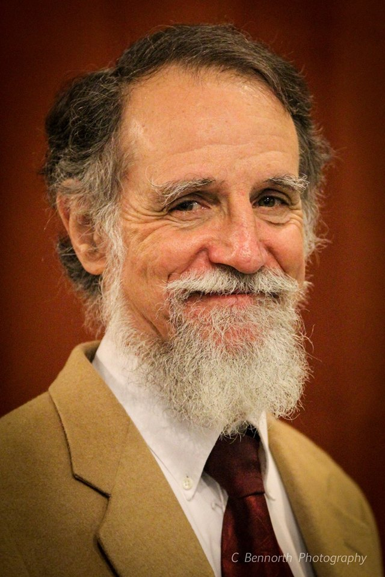
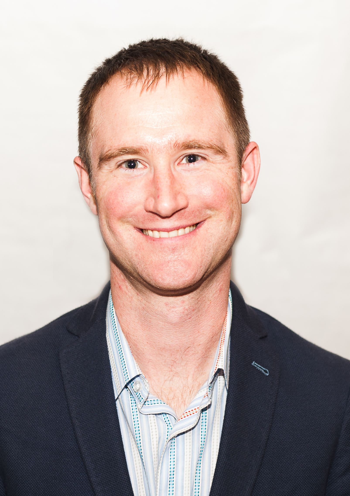
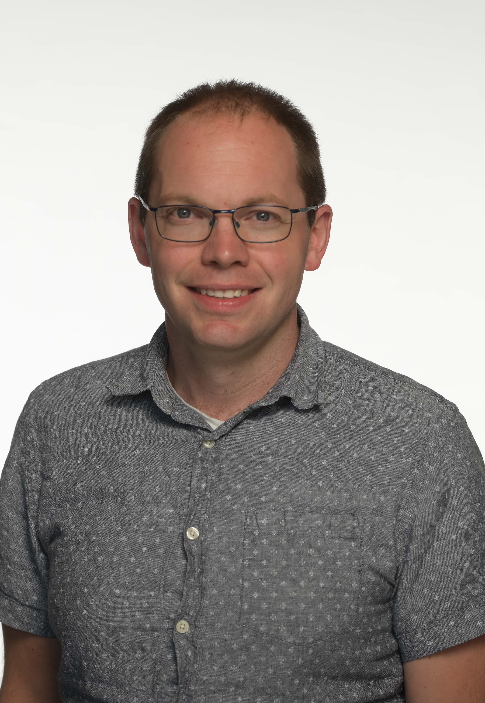
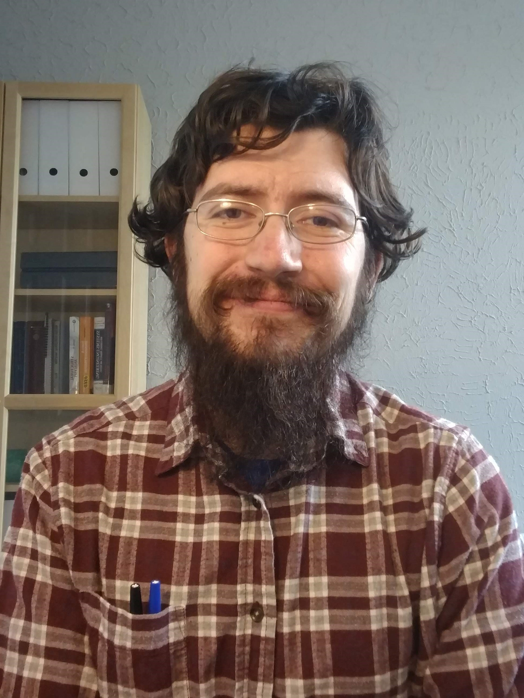
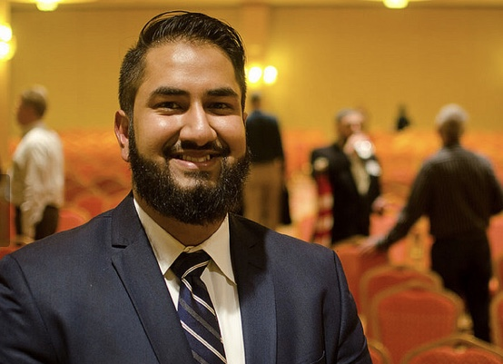

Researcher participants from IIT:


Adam Hock, Synthetic Chemist Associate Professor Chemistry, IIT Email: ahock@iit.edu Profile


Michael Desch Structural Engineering Researcher Doctoral Student CAEE, IIT Email: mdesch@hawk.iit.edu Profile
Dakota Bunn Microbiologist and Bioinformatician Doctoral Candidate Biology, IIT Email: dbunn1@hawk.iit.edu Profile

Moshin Ishaq Master's Student Biology, IIT Email: mishaq1@hawk.iit.edu
Educational Facilitator participants from NLU:
Vishodana Thamotharan, Science Educator Assistant Professor National College of Education Email: vthamotharan@nl.edu Website
Eun Kyung Ko, Science educator Associate Professor National College of Education Email: eun.ko@nl.edu
Shaunti Knauth Director of Engaged Research National Louis University Email: Shaunti.Knauth@nl.edu
Gwendolyn (Maxx) Shawlee Program Coordinator National Louis University Email: Gwendolyn.Shawlee@nl.edu
Teacher Facilitators:
Tim Nystrand Physics/Bilingual Teacher Solorio High School Email: tanystrand@cps.edu
Greta Kringle Biology Teacher Solorio High School Email: gmkringle@cps.edu
Elliot Michel Physics Teacher Solorio High School Email: emichel1@cps.edu